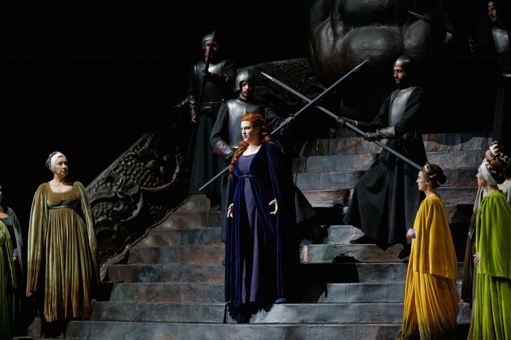
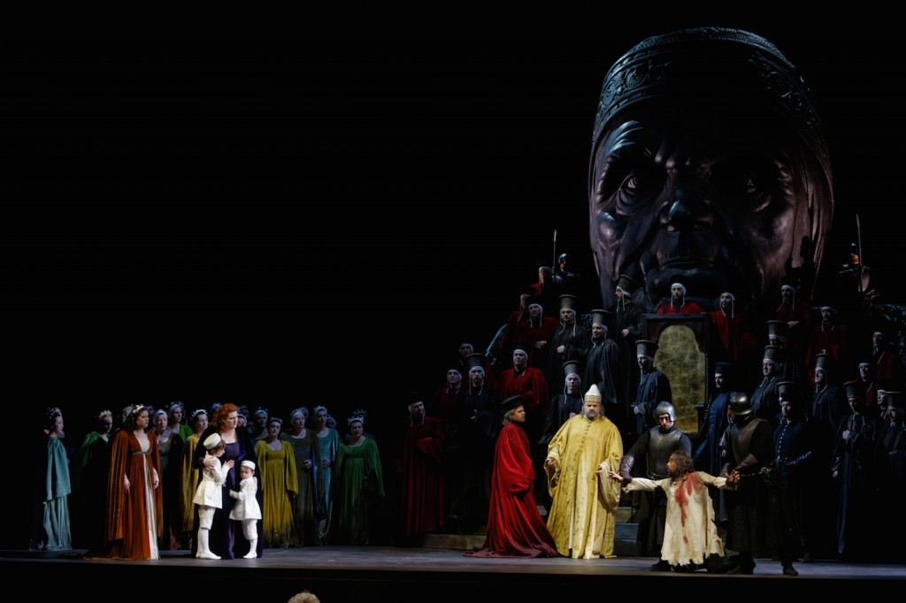
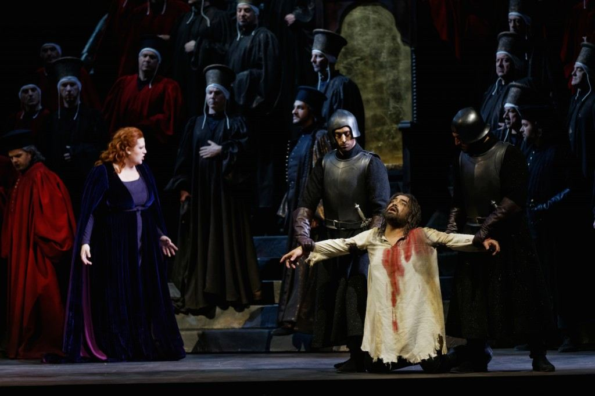
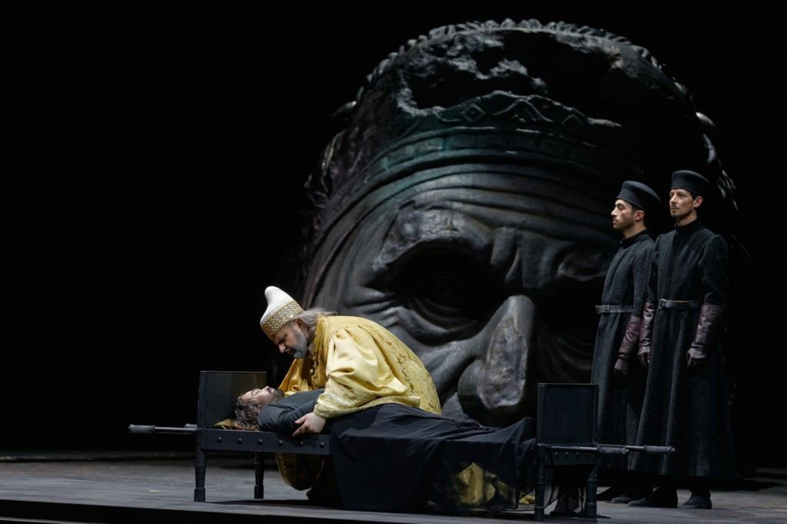
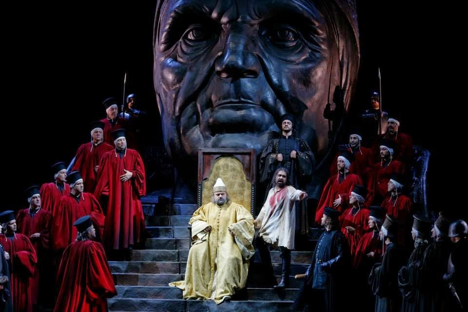

Toulouse 2014. Una Venezia ridotta a scultura scenica: il Leone di San Marco come unico totem. Il Verdi tardo (1844) restituito alla sua vera natura di tragedia di Stato.
Toulouse 2014. A Venice reduced to scenic sculpture: the Lion of Saint Mark as the only totem. Early Verdi (1844) restored to its true nature: a tragedy of State.
Toulouse 2014. Une Venise réduite à une sculpture scénique : le Lion de Saint-Marc comme seul totem.
I Due Foscari by Giuseppe Verdi, staged at the Théâtre du Capitole de Toulouse in May 2014, with direction by Stefano Vizioli, sets by Cristian Taraborrelli, costumes by Annamaria Heinreich and lighting by Guido Petzold, under the musical direction of Gianluigi Gelmetti.
An essential, sculptural staging dominated by a single colossal element — a nine-metre-tall sculpture-character that morphs from the brooding head of Doge Francesco Foscari into the winged lion of Saint Mark — transforming Verdi's Venetian tragedy into a meditation on power, paternity and the silent weight of the Republic.
I Due Foscari di Giuseppe Verdi, in scena al Théâtre du Capitole de Toulouse nel maggio 2014, con la regia di Stefano Vizioli, le scene di Cristian Taraborrelli, i costumi di Annamaria Heinreich e le luci di Guido Petzold, sotto la direzione musicale di Gianluigi Gelmetti.
Un allestimento essenziale e scultoreo, dominato da un solo elemento colossale — una scultura-personaggio alta nove metri che si trasforma dalla testa cupa del doge Francesco Foscari nel leone alato di San Marco — trasfigurando la tragèdia veneziana di Verdi in una meditazione sul potere, la paternità e il peso silenzioso della Serenissima.
I Due Foscari de Giuseppe Verdi, représenté au Théâtre du Capitole de Toulouse en mai 2014, avec la mise en scène de Stefano Vizioli, les décors de Cristian Taraborrelli, les costumes d'Annamaria Heinreich et les lumières de Guido Petzold, sous la direction musicale de Gianluigi Gelmetti.
Une mise en scène essentielle et sculpturale, dominée par un seul élément colossal — une sculpture-personnage de neuf mètres de haut qui se métamorphose de la tête sombre du doge Francesco Foscari en lion ailé de Saint-Marc — transfigurant la tragédie vénitienne de Verdi en une méditation sur le pouvoir, la paternité et le poids silencieux de la Sérénissime.
L'Opera — La tragèdia veneziana di Verdi
I Due Foscari è la sesta opera di Giuseppe Verdi, andata in scena al Teatro Argentina di Roma il 3 novembre 1844. Il libretto è di Francesco Maria Piave, che adatta la tragèdia in versi The Two Foscari di Lord Byron (1821), ispirata a sua volta alla cronaca veneziana del doge Francesco Foscari e di suo figlio Jacopo.
Verdi compose la partitura nell'estate del 1844, all'interno di quella stagione frenetica che lui stesso chiamò «gli anni di galera»: dieci opere in cinque anni, scritte in un'Italia ancora frammentata e sotto il controllo di censure diverse. La Fenice di Venezia aveva rifiutato il soggetto perché sgradito alla famiglia Foscari, tuttora esistente, e ai grandi nomi del patriziato lagunare. Roma, invece, lo accolse: il Teatro Argentina ne fece il proprio cartellone d'autunno.
L'opera è concentrata, breve, quasi cameristica: tre atti che si svolgono in un'unica giornata. Non ci sono battaglie, non ci sono cori trionfali nel senso classico: solo l'agonia di un padre che deve firmare la condanna del proprio figlio. È una tragedia da camera al servizio del potere — e proprio per questo, una delle opere più nere del primo Verdi.
I Due Foscari is Giuseppe Verdi's sixth opera, premiered at the Teatro Argentina in Rome on 3 November 1844. The libretto is by Francesco Maria Piave, adapted from Lord Byron's verse tragedy The Two Foscari (1821), itself drawn from the Venetian chronicle of Doge Francesco Foscari and his son Jacopo.
Verdi composed the score in the summer of 1844, during what he himself called his «galley years»: ten operas in five years, written in a still-fragmented Italy and under multiple censorships. La Fenice in Venice had rejected the subject because it would have offended the Foscari family, still extant, and the great names of the Venetian patriciate. Rome accepted it instead: the Teatro Argentina chose it for its autumn season.
The opera is concentrated, short, almost chamber-like: three acts unfolding within a single day. There are no battles, no triumphal choruses in the classical sense — only the agony of a father forced to sign the sentence of his own son. It is a chamber tragedy in the service of power — and for that reason, one of the darkest works of the early Verdi.
I Due Foscari est le sixième opéra de Giuseppe Verdi, créé au Teatro Argentina de Rome le 3 novembre 1844. Le livret est de Francesco Maria Piave, adapté de la tragédie en vers The Two Foscari de Lord Byron (1821), elle-même inspirée de la chronique vénitienne du doge Francesco Foscari et de son fils Jacopo.
Verdi composa la partition durant l'été 1844, pendant cette période frénétique qu'il appela lui-même ses «années de galère» : dix opéras en cinq ans, écrits dans une Italie encore morcelée et soumise à plusieurs censures. La Fenice de Venise avait refusé le sujet, jugé offensant pour la famille Foscari, toujours existante, et pour les grands noms du patriciat lagunaire. Rome l'accepta : le Teatro Argentina en fit son spectacle d'automne.
L'œuvre est concentrée, brève, presque de chambre : trois actes qui se déroulent en une seule journée. Il n'y a ni batailles ni chœurs triomphaux au sens classique — seulement l'agonie d'un père contraint de signer la condamnation de son propre fils. Une tragédie de chambre au service du pouvoir — et l'une des œuvres les plus noires du premier Verdi.
La Scultura-Personaggio — Nove metri di potere
Cristian Taraborrelli concepisce per Toulouse una scelta scenografica radicale: rinunciare a ogni decoro veneziano riconoscibile — niente Palazzo Ducale, niente bifore, niente laguna — e affidare l'intero peso visivo dell'opera a un solo elemento. Una scultura monumentale alta nove metri, posta al centro del palcoscenico, che diventa il vero protagonista muto della tragèdia.
Nei primi due atti la scultura ha le fattezze del doge Francesco Foscari: un volto severo, scolpito come un ritratto rinascimentale ingigantito, in cui i cantanti si muovono come formiche ai piedi del proprio sovrano. La testa — rigorosamente non un'astrazione, ma un ritratto fedele — impone la presenza dello Stato veneziano come oppressione fisica, schiacciante, a misura della solitudine di Jacopo Foscari, accusato e condannato.
Nel finale, la scultura si trasforma: il volto del doge cede il posto alla testa del leone alato di San Marco, simbolo di Venezia e della Serenissima. La sostituzione è il vero gesto registico: nel momento in cui Foscari muore, il suo individuo viene assorbito dall'allegoria dello Stato. Non è più un padre, non è più un uomo: è soltanto Venezia. La sua identità viene divorata dal proprio simbolo.
È un dispositivo scenografico che dialoga con la scultura monumentale del Novecento — da Boccioni alle teste cadute di Niki de Saint Phalle — ma che trova la sua matrice nel ritratto rinascimentale del potere veneziano: i busti dei dogi nelle sale del Palazzo Ducale, i ritratti di Bellini e di Tiziano. Qui però il potere non è appeso a una parete: cammina, vede, schiaccia.
For Toulouse, Cristian Taraborrelli devises a radical scenographic choice: renouncing every recognisable Venetian motif — no Doge's Palace, no Gothic mullioned windows, no lagoon — and entrusting the entire visual weight of the opera to a single element. A monumental nine-metre sculpture, set centre stage, which becomes the true silent protagonist of the tragedy.
In the first two acts the sculpture has the features of Doge Francesco Foscari: a severe face, carved like an enlarged Renaissance portrait, beneath which the singers move like ants at the feet of their own sovereign. The head — deliberately not an abstraction, but a faithful portrait — imposes the Venetian state as physical, crushing oppression, exactly mirroring the solitude of Jacopo Foscari, accused and condemned.
In the finale, the sculpture transforms: the doge's face gives way to the head of the winged lion of Saint Mark, symbol of Venice and the Serenissima. The substitution is the real directorial gesture: at the moment Foscari dies, the individual is absorbed by the allegory of the State. He is no longer a father, no longer a man: he is only Venice. His identity is devoured by its own symbol.
It is a scenographic device that dialogues with twentieth-century monumental sculpture — from Boccioni to the fallen heads of Niki de Saint Phalle — yet finds its true root in the Renaissance portraiture of Venetian power: the busts of doges in the halls of the Doge's Palace, the portraits of Bellini and Titian. Here, however, power is not hanging on a wall: it walks, it sees, it crushes.
Pour Toulouse, Cristian Taraborrelli conçoit un choix scénographique radical : renoncer à tout décor vénitien reconnaissable — pas de Palais des Doges, pas de fenêtres à meneaux, pas de lagune — et confier tout le poids visuel de l'opéra à un seul élément. Une sculpture monumentale de neuf mètres, placée au centre du plateau, qui devient le véritable protagoniste muet de la tragédie.
Dans les deux premiers actes, la sculpture porte les traits du doge Francesco Foscari : un visage sévère, sculpté comme un portrait Renaissance agrandi, au pied duquel les chanteurs se meuvent comme des fourmis. La tête — volontairement non abstraite, mais un portrait fidèle — impose l'État vénitien comme une oppression physique, écrasante, à la mesure de la solitude de Jacopo Foscari, accusé et condamné.
Au final, la sculpture se transforme : le visage du doge cède la place à la tête du lion ailé de Saint-Marc, symbole de Venise et de la Sérénissime. La substitution est le véritable geste de mise en scène : au moment où Foscari meurt, l'individu est absorbé par l'allégorie de l'État. Il n'est plus un père, plus un homme : il n'est plus que Venise. Son identité est dévorée par son propre symbole.
Un dispositif scénographique qui dialogue avec la sculpture monumentale du XXe siècle — de Boccioni aux têtes tombées de Niki de Saint Phalle — mais dont la racine se trouve dans le portrait Renaissance du pouvoir vénitien : les bustes des doges au Palais des Doges, les portraits de Bellini et de Titien. Ici toutefois, le pouvoir n'est pas accroché au mur : il marche, il voit, il écrase.
Curiosità Storiche — Il vero Foscari
Il dogato più lungo della Serenissima. Francesco Foscari (1373–1457) fu il sessantacinquesimo doge di Venezia. Governò per 34 anni, 6 mesi e 8 giorni: il regno più lungo nella storia millenaria della Repubblica. Sotto il suo dogato Venezia raggiunse la massima espansione territoriale verso la Terraferma, conquistando Brescia, Bergamo, Crema, Ravenna.
La caduta del figlio Jacopo. Nel 1445 l'unico figlio sopravvissuto del doge, Jacopo, fu processato dal Consiglio dei Dieci con l'accusa di corruzione ed esiliato. Seguirono altri due processi: nel 1450 e nel 1456, quando Jacopo confessò — persino senza tortura — di aver chiesto aiuto al sultano ottomano Maometto II e al duca di Milano, nemici giurati di Venezia. Fu rinchiuso a Creta, dove morì poco dopo.
L'abdicazione forzata. Alla notizia della morte del figlio, Foscari si ritirò in silenzio. Nell'ottobre 1457 il Consiglio dei Dieci lo costrinse ad abdicare. Morì una settimana dopo, l'1 novembre 1457. Lo scandalo di un doge defenestrato dalla propria oligarchia generò tale indignazione popolare che Venezia gli concesse comunque funerali di Stato.
Da Byron a Verdi. Lord Byron scrisse The Two Foscari nel 1821 durante il suo soggiorno italiano. Per il poeta inglese, ossessionato dal mito della Serenissima decaduta, la storia del doge tradito dal sistema oligarchico era la più veneziana di tutte le tragedie. Verdi lo lesse, ne fu colpito, e ne fece la propria sesta opera.
Il rifiuto della Fenice. Verdi avrebbe voluto far debuttare l'opera al Teatro La Fenice di Venezia, già nel 1843. La Fenice rifiutò: la famiglia Foscari era ancora viva, e i grandi nomi del patriziato lagunare avrebbero potuto leggere il libretto come un atto d'accusa. Solo Roma, lontana dalla laguna, accettò la prima.
The longest dogeship of the Serenissima. Francesco Foscari (1373–1457) was the sixty-fifth doge of Venice. He ruled for 34 years, 6 months and 8 days — the longest reign in the millennial history of the Republic. Under his dogeship, Venice reached its greatest territorial expansion on the Italian mainland, conquering Brescia, Bergamo, Crema and Ravenna.
The fall of his son Jacopo. In 1445 the doge's only surviving son, Jacopo, was tried by the Council of Ten on charges of corruption and exiled. Two further trials followed: in 1450 and 1456, when Jacopo confessed — without even being tortured — to having sought help from the Ottoman sultan Mehmed II and the Duke of Milan, sworn enemies of Venice. He was imprisoned on Crete, where he soon died.
The forced abdication. When the news of his son's death reached him, Foscari withdrew into silence. In October 1457 the Council of Ten forced him to abdicate. He died one week later, on 1 November 1457. The scandal of a doge defenestrated by his own oligarchy provoked such public outcry that Venice nonetheless granted him a state funeral.
From Byron to Verdi. Lord Byron wrote The Two Foscari in 1821 during his Italian sojourn. For the English poet, obsessed with the myth of a fallen Serenissima, the story of a doge betrayed by his own oligarchic system was the most Venetian of all tragedies. Verdi read it, was struck by it, and made it his sixth opera.
La Fenice's refusal. Verdi had hoped to premiere the opera at Teatro La Fenice in Venice, as early as 1843. La Fenice refused: the Foscari family was still alive, and the great names of the Venetian patriciate could have read the libretto as an indictment. Only Rome, far from the lagoon, accepted the premiere.
Le dogat le plus long de la Sérénissime. Francesco Foscari (1373–1457) fut le soixante-cinquième doge de Venise. Il régna 34 ans, 6 mois et 8 jours : le règne le plus long de l'histoire millénaire de la République. Sous son dogat, Venise atteignit son expansion territoriale maximale sur la Terre ferme, conquérant Brescia, Bergame, Crema et Ravenne.
La chute du fils Jacopo. En 1445, l'unique fils survivant du doge, Jacopo, fut jugé par le Conseil des Dix pour corruption et exilé. Deux autres procès suivirent : en 1450 et 1456, lorsque Jacopo avoua — sans même avoir été torturé — avoir demandé l'aide du sultan ottoman Mehmed II et du duc de Milan, ennemis jurés de Venise. Il fut emprisonné en Crète, où il mourut peu après.
L'abdication forcée. À la nouvelle de la mort de son fils, Foscari se retira dans le silence. En octobre 1457, le Conseil des Dix le contraignit à abdiquer. Il mourut une semaine plus tard, le 1er novembre 1457. Le scandale d'un doge défénestré par sa propre oligarchie suscita un tel émoi populaire que Venise lui accorda néanmoins des funérailles d'État.
De Byron à Verdi. Lord Byron écrivit The Two Foscari en 1821 durant son séjour italien. Pour le poète anglais, hanté par le mythe de la Sérénissime déchue, l'histoire d'un doge trahi par son propre système oligarchique était la plus vénitienne de toutes les tragédies. Verdi la lut, en fut frappé, et en fit son sixième opéra.
Le refus de la Fenice. Verdi aurait voulu créer l'opéra au Teatro La Fenice de Venise dès 1843. La Fenice refusa : la famille Foscari était toujours vivante et les grands noms du patriciat lagunaire auraient pu lire le livret comme un réquisitoire. Seule Rome, loin de la lagune, accepta la première.
Il Leone di San Marco — Il simbolo eterno di Venezia
La scelta di sostituire la testa del doge con quella del leone alato non è decorativa: è storica e teologica insieme. Il leone di San Marco è il simbolo araldico della città di Venezia da quasi otto secoli — le prime raffigurazioni del santo evangelista in forma di leone alato risalgono al 1261, quando, con la caduta dell'Impero Latino di Costantinopoli, Venezia rinsaldò i propri rapporti con l'Egitto e con Alessandria, città di cui Marco era stato primo vescovo.
L'iconografia è codificata: il leone, alato, regge il libro aperto del Vangelo con le parole «Pax tibi Marce, evangelista meus» («Pace a te, Marco, mio evangelista»), la frase che secondo la leggenda un angelo in forma di leone rivolse al santo naufrago nelle lagune. Spesso impugna anche una spada: il libro è sapienza e pace, la spada è giustizia e forza. La coda alzata indica maestà.
Trasformare il volto del doge nel leone, nel finale dell'opera, significa allora dichiarare visivamente la verità politica della tragèdia: a Venezia il doge non è mai un individuo. È soltanto la maschera temporanea di un'allegoria più antica, che lo precede e lo divora. Foscari muore due volte: come uomo e come segno araldico.
The choice to replace the doge's head with that of the winged lion is not decorative: it is at once historical and theological. The lion of Saint Mark has been the heraldic symbol of Venice for nearly eight centuries — the earliest depictions of the evangelist as a winged lion date from 1261, when, after the fall of the Latin Empire of Constantinople, Venice strengthened its ties with Egypt and Alexandria, the city of which Mark had been first bishop.
The iconography is codified: the winged lion holds the open Gospel inscribed with the words «Pax tibi Marce, evangelista meus» («Peace to you, Mark, my evangelist»), the phrase that, according to legend, an angel in the form of a lion addressed to the saint shipwrecked in the lagoons. Often it also wields a sword: book is wisdom and peace, sword is justice and strength. The raised tail expresses majesty.
To transform the doge's face into the lion, in the opera's finale, is to declare visually the political truth of the tragedy: in Venice, the doge is never an individual. He is only the temporary mask of a more ancient allegory, which precedes him and devours him. Foscari dies twice: as a man and as a heraldic sign.
Le choix de remplacer la tête du doge par celle du lion ailé n'est pas décoratif : il est à la fois historique et théologique. Le lion de Saint-Marc est le symbole héraldique de Venise depuis près de huit siècles — les premières représentations de l'évangéliste en lion ailé remontent à 1261, lorsque, après la chute de l'Empire latin de Constantinople, Venise renforça ses liens avec l'Égypte et avec Alexandrie, dont Marc avait été le premier évêque.
L'iconographie est codifiée : le lion ailé tient le livre ouvert de l'Évangile portant les mots «Pax tibi Marce, evangelista meus» («Paix à toi, Marc, mon évangéliste»), phrase qu'un ange en forme de lion adressa, selon la légende, au saint naufragé dans les lagunes. Souvent il brandit aussi une épée : le livre est sagesse et paix, l'épée est justice et force. La queue dressée exprime la majesté.
Transformer le visage du doge en lion, dans le finale de l'opéra, c'est déclarer visuellement la vérité politique de la tragédie : à Venise, le doge n'est jamais un individu. Il n'est que le masque provisoire d'une allégorie plus ancienne qui le précède et le dévore. Foscari meurt deux fois : comme homme et comme signe héraldique.
Galleria — Foto di scena






Il Teatro — Théâtre du Capitole de Toulouse
Il Théâtre du Capitole è uno dei più antichi teatri lirici di Francia: la sua «Salle du Jeu de spectacle» fu inaugurata l'11 maggio 1737, all'interno del palazzo municipale di Toulouse, sulla Place du Capitole. Costruito nel 1736, è uno dei rarissimi casi al mondo di teatro lirico ospitato dentro l'Hotel de Ville di una città.
A cavallo tra Ottocento e Novecento Toulouse divenne, secondo la critica francese, un «tempio del bel canto», capace di rivaleggiare con la Scala di Milano e il Liceo di Barcellona. La sala dorata attuale — ispirata all'Opéra Garnier — fu inaugurata nel 1880 dagli architetti Dieulafoy e Leclerc, e rinnovata da Paul Pujol nel 1923.
Nel novembre 2021 l'istituzione ha ottenuto dallo Stato francese il prestigioso label di «Opéra national en région», diventando ufficialmente Opéra national du Capitole. La produzione di I Due Foscari del 2014 si inserisce nella stagione che ha consolidato il teatro come laboratorio del repertorio verdiano in Francia, con una particolare attenzione alle opere meno frequentate.
The Théâtre du Capitole is one of the oldest opera houses in France: its «Salle du Jeu de spectacle» was inaugurated on 11 May 1737, inside the city hall of Toulouse, on Place du Capitole. Built in 1736, it is one of the very rare cases in the world of an opera house housed inside the Hotel de Ville of a city.
At the turn of the twentieth century Toulouse became, in the words of French critics, a «temple of bel canto», capable of rivalling La Scala in Milan and the Liceu in Barcelona. The current gilded hall — inspired by the Opéra Garnier — was inaugurated in 1880 by the architects Dieulafoy and Leclerc, and renewed by Paul Pujol in 1923.
In November 2021 the institution was awarded the prestigious «Opéra national en région» label by the French state, officially becoming the Opéra national du Capitole. The 2014 production of I Due Foscari belongs to the season that consolidated the theatre as a French laboratory for Verdi's lesser-performed operas.
Le Théâtre du Capitole est l'un des plus anciens opéras de France : sa «Salle du Jeu de spectacle» fut inaugurée le 11 mai 1737, à l'intérieur du palais municipal de Toulouse, sur la place du Capitole. Construit en 1736, c'est l'un des rarissimes exemples au monde d'opéra logé à l'intérieur de l'hôtel de ville d'une cité.
À la charnière des XIXe et XXe siècles, Toulouse devint, selon la critique française, un «temple du bel canto», capable de rivaliser avec la Scala de Milan et le Liceu de Barcelone. L'actuelle salle dorée — inspirée de l'Opéra Garnier — fut inaugurée en 1880 par les architectes Dieulafoy et Leclerc, et renouvelée par Paul Pujol en 1923.
En novembre 2021, l'institution a obtenu de l'État français le prestigieux label «Opéra national en région», devenant officiellement l'Opéra national du Capitole. La production de I Due Foscari de 2014 s'inscrit dans la saison qui a consolidé le théâtre comme laboratoire français des opéras moins joués de Verdi.
Il Regista — Stefano Vizioli
Nato a Napoli il 19 giugno 1959, Stefano Vizioli è uno dei registi d'opera italiani più raffinati della propria generazione. Diplomato in pianoforte al Conservatorio San Pietro a Majella di Napoli con il massimo dei voti e la lode, debutta come regista nel 1979 al Festival di Opera Barga con L'impresario delle Canarie di Domenico Sarro. Da allora ha firmato più di duecento allestimenti nei principali teatri europei, americani e asiatici.
La sua cifra registica unisce un profondo rispetto della partitura — eredità della formazione musicale — a una capacità di lettura visiva sobria, mai illustrativa, sempre tesa a far emergere il sottotesto psicologico dell'opera. Accademico della Filarmonica di Roma, è stato direttore artistico di importanti istituzioni liriche italiane, tra cui il Festival Pucciniano di Torre del Lago.
Per Toulouse 2014 Vizioli sceglie con Taraborrelli la strada dell'astrazione monumentale: un solo elemento scenico, due trasformazioni, e tutto lo spazio del palco trasformato in camera d'eco psicologica. Il risultato è un Verdi giovanile letto come già maturo: spogliato dei pittoreschi veneziani, ridotto all'osso del conflitto tra individuo e Stato.
Born in Naples on 19 June 1959, Stefano Vizioli is one of the most refined Italian opera directors of his generation. He graduated in piano with full marks and honours from the San Pietro a Majella Conservatory in Naples, and made his directing debut in 1979 at the Opera Barga Festival with L'impresario delle Canarie by Domenico Sarro. Since then he has signed more than two hundred productions in the leading theatres of Europe, the Americas and Asia.
His directorial signature combines a deep respect for the score — a legacy of his musical training — with a sober, never illustrative visual reading, always aimed at bringing out the psychological subtext of the work. A member of the Philharmonic Academy of Rome, he has served as artistic director of several major Italian opera institutions, including the Festival Puccini at Torre del Lago.
For Toulouse 2014, Vizioli chooses, together with Taraborrelli, the path of monumental abstraction: a single scenic element, two transformations, and the entire stage turned into a psychological echo chamber. The result is an early Verdi read as already mature: stripped of Venetian picturesque, reduced to the bare bone of the conflict between the individual and the State.
Né à Naples le 19 juin 1959, Stefano Vizioli est l'un des metteurs en scène d'opéra italiens les plus raffinés de sa génération. Diplômé en piano avec mention très bien et félicitations du Conservatoire San Pietro a Majella de Naples, il fait ses débuts de metteur en scène en 1979 au Festival d'Opera Barga avec L'impresario delle Canarie de Domenico Sarro. Il a depuis signé plus de deux cents productions dans les principaux théâtres d'Europe, des Amériques et d'Asie.
Sa signature de metteur en scène associe un profond respect de la partition — héritage de sa formation musicale — à une lecture visuelle sobre, jamais illustrative, toujours tendue vers le sous-texte psychologique de l'œuvre. Académicien de la Philharmonique de Rome, il a été directeur artistique de plusieurs institutions lyriques italiennes majeures, dont le Festival Puccini de Torre del Lago.
Pour Toulouse 2014, Vizioli choisit avec Taraborrelli la voie de l'abstraction monumentale : un seul élément scénique, deux transformations, et toute la scène devenue chambre d'écho psychologique. Le résultat est un Verdi de jeunesse lu comme déjà mûr : dépouillé du pittoresque vénitien, réduit à l'os du conflit entre l'individu et l'État.
Creative Team
Apparato critico
«O vecchio cor che batti / come a' prim'anni in seno!»
I Due Foscari, aria del Doge Francesco — Atto III, Verdi/Piave 1844
«Foscari mi pesa addosso. Ho i pugni stretti.»
«Foscari weighs on me. My fists are clenched.»
«Foscari me pèse. J'ai les poings serrés.»
Giuseppe Verdi — Lettera a Clarina Maffei (1844)
«Una Venezia senza gondole, senza calli, senza ponti. Solo il Leone come monolite. La scena di Taraborrelli sostituisce la cartolina con la geometria della tirannia.»
«A Venice without gondolas, without alleys, without bridges. Only the Lion as monolith. Taraborrelli's set replaces the postcard with the geometry of tyranny.»
«Une Venise sans gondoles, sans ruelles, sans ponts. Seul le Lion comme monolithe. La scénographie remplace la carte postale par la géométrie de la tyrannie.»
Critica scenografica — Théâtre du Capitole, Toulouse 2014
Tags